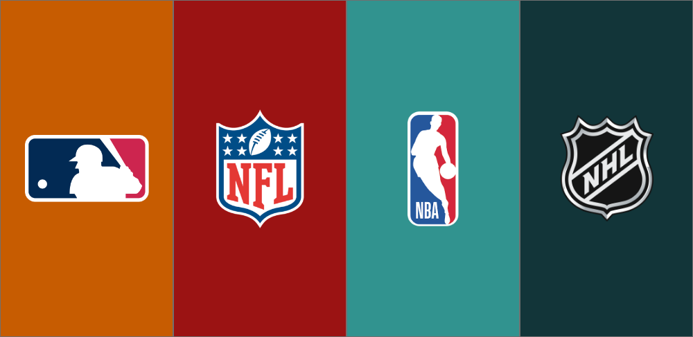

My Favorite Midwest Sports Teams
My favorite sports teams come from two iconic Midwest cities: Green Bay and Chicago. The Green Bay Packers hold a special place in my heart. With their rich history, legendary players like Brett Favre and Aaron Rodgers, and a devoted fanbase, the Packers have set a standard for excellence in the NFL. I also follow the Chicago Cubs, a team with a deeply passionate fanbase and a storied history. The Cubs’ unforgettable World Series win in 2016 after a 108-year drought was a historic moment, and their perseverance and dedication to the game continue to inspire me. Similarly, the Chicago Blackhawks are another source of pride, with their rich history in the NHL, a legacy of iconic players like Bobby Hull and Patrick Kane, and their recent Stanley Cup victories, which have further solidified the city's deep-rooted passion for sports. Both teams, along with the Packers, represent the spirit of the Midwest—grit, tradition, and a love for the game that goes beyond the field.
